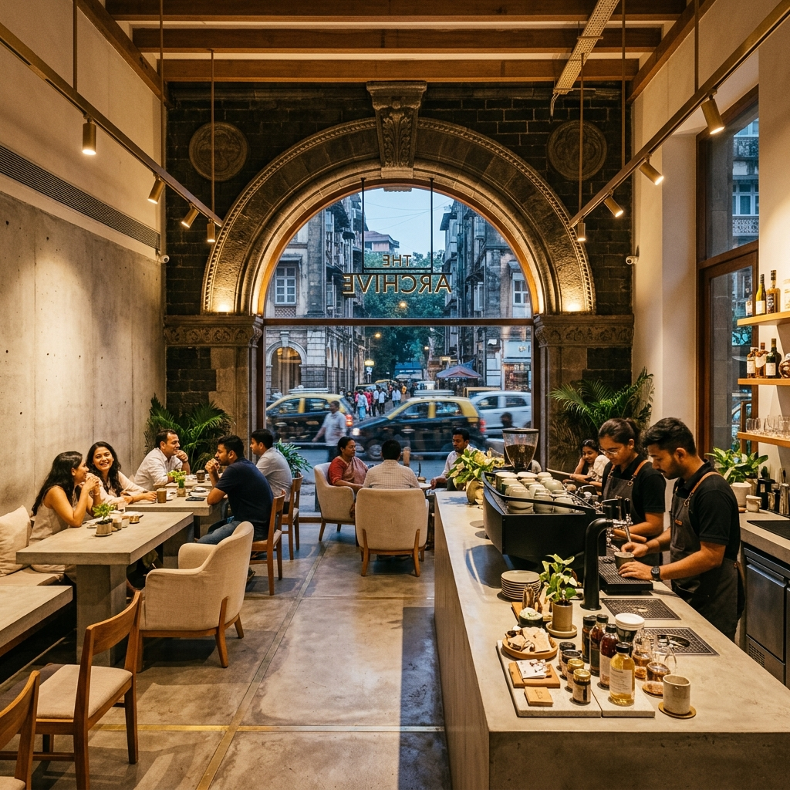

Fort, South Mumbai
A sanctuary of visual silence, slow sourdough pizzas, and narrative roasts.Set inside a restored 100-year-old basalt stone warehouse. Transition through Graham Road's heavy pivot Portal, explore coffee at the 16-foot concrete Monolith Bar, and find spatial distance in the quiet Gallery Lounge.
ARCH Café is located in a restored 100-year-old heritage structure in South Mumbai. The physical space is stripped of visual noise, creating an acoustic sanctuary where room sound levels are capped at 50-55 dB.
We treat our menu like a museum catalog. Every specialty coffee, stone-baked sourdough pizza, and handcrafted biscuit is numbered, carrying a documented provenance served on heavy-stock paper Provenance Cards.
ARCH is designed to decelerate the senses, transitioning you from the noise of South Mumbai to a sanctuary of absolute silence.
A massive, 12-foot raw-steel pivot door. Its immense mass and specialized acoustic seals act as a gatekeeper, muting Ballard Estate's traffic noise the moment it shuts behind you.
A single 16-foot slab of hand-cast raw concrete. Here, we brew without noise—no noisy grinders or banging knock boxes. All equipment is recessed sub-counter for uninterrupted flow.
Dating back to 1912, these restored basalt stone arches create intimate alcoves. Lined with acoustic lime plaster, they absorb stray sound waves, guaranteeing privacy and peace.
We do not rush. Every element on our menu represents a long duration of deliberate craft, balanced between local Indian terroir and international baking discipline.
Ovens reach exactly 450°C. The first batches of 48-hour slow-rise sourdough pizzas are hand-stretched, featuring blistered crusts and light, airy crumb.
We configure the Modbar extraction metrics. Water mineral profile is set to 120 TDS, and beans from Araku and Nilgiris estates are extracted at precise pressure profiles.
Warm Snickerdoodles and flaky buttermilk biscuits are pulled from the ovens. We finish them with hand-harvested Konkan sea salt, cold-smoked in our studio.
